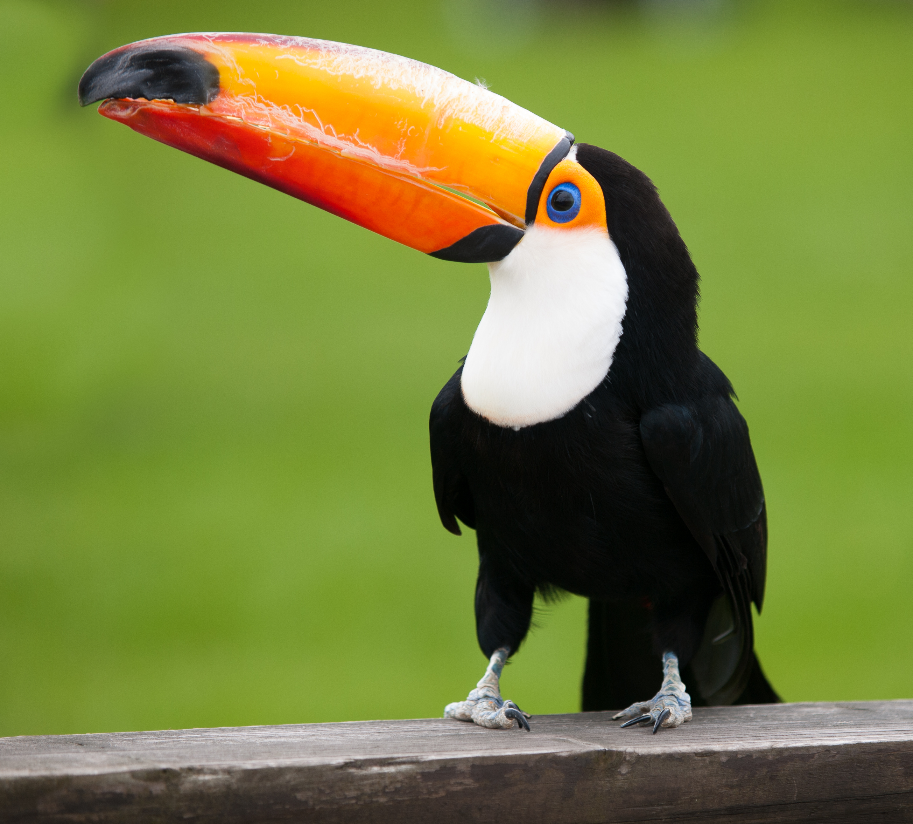

Toucannon
Toucannon, the Cannon Pokemon is a normal flying type pokemon based on a toucan. It is the final form of Pikipek. There are gases inside its beak, which can ignite and launch seeds with enough force to shatter boulders. In order to communicate, Toucannon strike each other with their beaks. The number and strength of the hits reflect how it is feeling. Toucannon is well known for forming loving couples.

Toucan
Toucans are birds native to the Neotropics, from Southern Mexico, through Central America, into South America south to northern Argentina. Toucans are highly social and often live in groups. Toucans often spend time sparring with their bills, tag-chasing and calling. They primarily eat fruit, but they are also opportunistic omnivores.